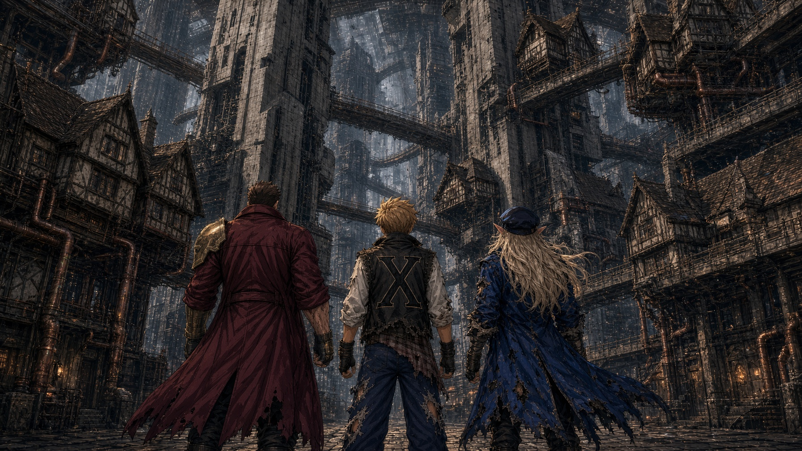

The books on the shelves were restless. The ones floating by holding candles and quills and inkpots shivered and nearly dropped their loads. Skal looked up from his work, carefully transcribing letters from a scroll so old that he had personally crafted impossibly thin sheets of glass to protect its fragments from coming apart under clumsy fingers. He sensed it too, a sound like surf that pressed against his eardrums without ever quite being heard. A smell that was sharp and dark, like earth and ozone all at once, just barely detectable.
Skal set his quill aside and stood up. “What’s wrong, boss?” The voice came from behind him over his shoulder and deep within his head at once.
“Hm. I’d like to see,” Skal replied shortly. Skal always replied shortly.
He needed a walk anyways. His back and rear were nearly bruised from sitting so still converting a language he didn’t know into languages he could just barely make out the meaning of. The old stones that gave him the clues he needed would be fine where they were and the scroll was now safer than it had been moldering on that shelf. He put on his black fingerless gloves, tightened their little straps to compress his hands, and picked up his black wizard’s hat with the two white stripes down either side and put it on, settling just short of his long, pointed ears.
Skal was a wizard. He had no beard and this disqualified him by some definitions. He’d heard that joke many times when he was at the Academy of Dreams all those endless centuries ago. He made up for it by knowing many, many things and remaining endlessly curious.
“I’d like to see is our motto,” Lumiere said. Just ahead of Skal, a staff made of ancient gnarled oak curving into a rough shepherd’s crook appeared from nothing but a slight wisp of silver mist. He caught it without looking, muscle memory. Lumiere floated just a bit over his right shoulder. He was a book dressed in black leather binding with two white stripes running along the belt that secured him closed. He’d adopted the look when Skal had explained the dress code. Lumiere liked rules, so he’d changed without question.
Skal began walking, watching the books of the Unending Library. The only sounds in the labyrinthine racks were the fluttering of nervous pages, his own footsteps, and the tap of the staff as he moved. And the surf. It was louder now, pushing harder against his ears, but still impossible to hear.
“It will be one of the doors,” Skal said. He closed his eyes and recalled the nearest ones. He didn’t stop walking. For many, the Unending Library turned out to be Unending because they got lost and died there, the library outlasting their short lives. For Skal, the library was Unending because he had a suspicion that it was quite literally endless. He had journeyed its halls for nearly 600 years now and had not found a hint of it ever nearing its conclusion. It varied in layout and its racks of books were not always so full that one could not look through them and here and there were walls that reached all the way up to its great vaulted ceilings or even higher domes. Sometimes he found doors.
This one stood between two gilded bookshelves, a deep red velvet curtain parted on either side of it, its hand carved mahogany was old. He gave a cursory glance over the books around it. “Magitek and theories on material matter,” he said. “Wonder where it goes.” He reached out and gently opened the door.
Black.
Blacker than black.
What stared back out and into him was the absolute void. Nearby candles went out. He could feel it pressing against the door frame, against the very air of the library, but it could not enter. It wasn’t invited. Skal pushed the end of his staff into the threshold and willed it to light. A soft, unnaturally blue light shone from within the crook’s grasp and pierced the darkness.
“If any remain who are whole and hearty, I invite them in,” Skal intoned. There was a long moment of painful silence, only the nothing sound of ocean waves pressing against his senses but never quite entering them. Then he felt something furry against his leg. He looked down and a bright eyed calico cat was purring and rubbing him as it passed by out of the darkness. He stepped aside as a great fluffy gray cat, who looked as old as himself, walked in slowly. Behind it slinked a black cat only a single shade less ebony than the darkness it had emerged from, its emerald green eyes glaring at him balefully, as though its fate and inconvenience had somehow been his fault. He felt something furry against his leg. He looked down and a bright eyed calico was purring and rubbing him as it passed by out of the darkness.
He shut the door carefully and made sure that it was fully latched. Then he held his hand out over the seam. There was a cold gray, silvery glow on the back of his hand, a complex sigil appeared there, it might have looked like a book with a key on the cover if one squinted at it. The door made a click and a thunk. It was locked. When he turned around, the little cats were gone.
In their place sat three great cats, large as tigers, with women’s faces. Almost women’s faces. Their features were too sharp and predatory to be real women. The old gray one now had the face of an ancient matron, her long fluffy gray hair secured in a tight bun. She sat on her gray snow leopard haunches, all her spots faded almost to the same silver as the rest of her fur, and gave Skal the meagerest of nods, a sign of great respect.
“You are kind to us Wizened One. We three are in your debt.” When she spoke, Skal felt his chest vibrate in sympathy with the deep low growl of a purr underneath her beautiful voice.
“I am not one to hold favors. May I ask it repaid with the wisdom of the Sphinx?” Skal felt the formal tones slide into his voice automatically. When one lived as long as he had, one learned formality and politeness were not “nice” — that word so abused by parents and governors throughout the Dream — they were a survival trait.
The black sphinx spoke now, her voice was lower than the matron’s, and her purr was a growl Skal felt through his boots. “We are proud still, are we not sister? How can we deal with the two-paw without fulfilling our nature? He has saved us? We have stood by the door for a century, waiting! We pawed and scratched and screamed and still the Librarians ignored us. I say we eat him for failing his duty.”
“I am no Librarian, Madam. Only a patron. I have been in this wing of the library a short time, and it grieves me to see your pride wounded so.” Skal flicked his hand out and there was a twist in the air. It made the eye water to stare at it as it occurred, but when it finished, there was in his hand a band of silver inlaid with emeralds. It was large enough even for the sphinx to wear it. “If your lives are not enough to earn a turn of kindness, may I bribe your pride for it?” He held out the band. The black sphinx, the dark olive skin of her brow wrinkling in annoyance and conflicting feelings, stared hard at him. Then with panther speed her paw lashed out and the band was gone.
“What does an elf not know? What can’t the old man learn? He’s sat in the dust for centuries, now to ask each sphinx in turn. Riddles three and riddles be!” the calico said. She had the face of a young woman, a teenager, and she was grinning happily, her teeth too sharp to be a human’s. “Tell me that then ask your own! What does an elf not know?”
“How to grow a beard,” said Skal, utterly humorless, his voice as dry as the parchment he preferred to people.
The sphinx stared at him, her golden eyes widening. The black sphinx growled. The gray sat as still as stone. Then the calico began to laugh, rolling onto her back, laughing and meowing and purring, her paws kicking with joy. “I will tell the elf! I will tell the elf! The thing he desires sits in a sea of wealth!” She rolled over onto her belly, her face resting in her paws, her face blushing with delight. “Seek,” she said staring at him and through him. “Seek and you will find. You sought and you have found. Will find the seeking thing. The key. The crown.”
The black sphinx spat. “Enough, sister. Shut your foolish mouth and come. We have given more than any mortal deserves. Now we must avenge ourselves. I desire to give the librarians a chase they will not forget.”
The gray looked from the calico to Skal and back. Her eyes blinked once, very, very slowly. “Skal D’Omen. What you seek is not a thing to be grasped. But I see you. You will not be stopped. Our sister has paid you in full for your kindness, but I offer this freely. When you have grasped what must not be held and turned it to your will, remember to let go.” She stood up and turned to leave. “Ah, elf, one last thing. What section of the library are we in?”
Skal looked to the side at the books on physics and science and mathematics. “Fiction,” he said.
“Our thanks,” said the sphinx.
Skal inclined his head, lower than the sphinxes had to him, the brim of his hat tucking them just out of his view. When he looked back up, the great cats were gone.
“What the heck did all of that mean?” asked Lumiere. “Did they just say you’re going to find Nidhogg? You’ve been looking for it so long, I was starting to wonder if it was even real.”
“No. They said I will find what I seek.”
“That’s the same thing.”
“For a book of wisdom, you are dense.”
“Thank you,” the book said proudly.
Skal turned and walked back to his work. He would finish it today and start out tomorrow for his next goal. He had all the information he needed from the scroll, he could have left right then.
Skal hated leaving things half done.
Nikko fancied that he dreamed. He saw fish, great pink Koi in the sky over his head. When he looked down he found he was standing on the ocean, his feet sliding up and down with the waves, and below the surface he could see bright red and pink and warm orange corals. Off in the distance was a black storm, roiling with lightning. He felt like he needed to get to it, but walking on the water surface was difficult. He kept slipping and barely catching himself. Then at last he slipped again and fell backwards through the surface of the water below him.
He woke up. He was in a dark alleyway. He sat up, spitting grit from his mouth and looking around, trying to figure where he was in the city. It wasn’t the good alley, the one with the cats. It seemed like one from near the industrial district, covered in soot and grime.
So it was all a dream, he thought to himself. I’ll call Wren and Momo, see how they are. He looked for his phone. No phone. That’s when he noticed the spear.
It was lying on the ground next to him, looking quite solid and made of brass or dirty gold. He picked it up. It was heavy, but lighter than he expected. Three short cross pieces gave it an odd appearance just before the head of the blade made it clear what it was. When Nikko turned it over, the back of his left hand flashed gold and he dropped it again. The spear vanished in a flash of gold specks that danced and fell to the ground, disappearing.
“Okay,” he said to himself. “I must have hit my head. Again.” He looked at the back of his hand to see a golden tattoo there. It might have been a key or a spear, with a circle around one end, and complex geometric shapes woven into and through it. It still glowed, dully, in the dark of the alley.
Nikko shook off his outfit and hair to loosen the rest of the dust and grit that clung to him and turned to the mouth of the alleyway. “I’ll just go home and find my cell,” he said, to no one in particular. “Then we can figure out what’s going on together.”
When he walked out of the alley, he immediately realized that he was no longer in Shin-Seibu.
There was no sky. High above him, bending impossibly overhead, he could only see more city. He looked down the street he was on and could see where the buildings started to bend upward and away before a spiraling brass tower ate up the street and blocked the view. Wherever he was, it was like the inside of a great bubble and the city was growing towards the middle from the edges. The buildings were all wrong, too. Gothic towers. Wooden mansions with sweeping roof lines. Stone and wooden castles. Modern steel and glass high rises. All of them sat next to one another like they had been begged, borrowed or stolen from a thousand dreams and super glued together.
More immediately, Nikko could see five black, glossy forms with glowing yellow eyes and yellow hearts cut into four, moving towards him. There was a child running from them crying. He felt a flash of that new feeling, rage, and moved towards the creatures without thinking. He reached out his hand and the golden spear appeared in it as he swung, like it was a great sword, and caught the first creature in the neck. It didn’t vaporize like the ones on the roof had. The cross pieces caught its neck and tossed it aside into the street and it splattered temporarily on the cobbles.
Nikko was suddenly very aware that while he had the strength to fight, he really didn’t know the first thing about using a spear. Back home he used to swing a stick on the beach like a sword for exercise. He hadn’t even thought about studying combat as a skill. Just something to fill the time. Now he had a long pointy stick. Potentially a magical stick. His chest beat hard as the remaining four creatures moved towards him.
They were taller and more firm in form than the things in Shin-Seibu had been. They still morphed and shifted here and there, but for the most part they looked like tall thin humans with ribbon like blades for arms. Their heart sigils burned bright on their chests and their eyes stayed put, in their heads, where eyes belonged. Much more consistent than the blobby messes of mismatched parts and appendages he had faced before. Still, a human was a thing he figured he knew how to hurt.
Nikko set his stance a bit, changed his grip on the spear and tried holding the creatures off by poking at them a bit when they got too close, stabbing them where their little heart sigil was. They were much too fast for that. Each time he poked at them, they became quicksilver and would morph out of the way or fully around the blade, a hole forming in their body to dodge the attack if necessary. He had only taken the first one by surprise and it was already pulling itself back together. The child he had been hoping to save had run on and disappeared.
So this was it. He was going to die stupidly fighting mud monsters in an impossible city. He was going to die twice in one day.
“Man. I hate it when this happens,” Nikko mumbled to himself.
Then a deep crack in the air that Nikko felt in his guts shattered the quiet and a beam of white hot light flashed past Nikko’s ear. The lead monster’s head was gone, a jagged semicircle of void over the darkness burning and smoking where it had been. Then a bright crystalline shield of light shimmered into being in front of Nikko’s body as a MAN, and it had to be capitalized because that’s how big he was, stepped up next to Nikko.
He looked down on him, because there was no other way for him to examine the boy.
“You okay, kid?” he grumbled like a mountain just learning to talk.
“Uh, yeah. Is the other kid okay?”
“He found us,” the hillside growled. “Let’s clean these up.”
The crystal shield went down and the massive man hauled back and punched one of the creatures in the face. The fist he hit it with had a glowing golden crystal embedded in it, and it flashed bright as he swung. The creature would have been torn apart by the force, but the light made it burst into black steam and vanish. Nikko saw that another was about to jump on the man’s side while he finished his movement and stepped into the space, stabbing clumsily upward. The thing fell onto the spear and hissed, its blade arms narrowly avoiding Nikko’s body as it tried desperately to reach the man.
There was another crack and a beam of jagged light, which Nikko now realized was a bolt of electricity, and the creature was vanishing as the other had. When Nikko looked past the green flare in his vision, he saw a tall thin man with long flowing platinum hair, a black slouch cap, and long pale ears. He looked for all the world like an elf. He was holding a smoking stick, about 4 inches long in one hand and drawing out another, about 7 inches long, from a bundle of them tied to his belt.
“Watch yer ’ead, berk,” the elf said. Because he was an elf. Nikko somehow understood that instinctively. He wasn’t even sure he had ever heard of an elf, but the knowledge that this was a powerful and dangerous being hit the center of his brain. It had hit the same way standing next to the seven-foot wall of muscle who punched monsters with light had. It came from the same deep, human memory. Big, hairy man-creatures are dangerous. Thin, long-eared man-creatures are just as, if not more, dangerous.
But it wasn’t trying to kill him and the big guy, so he turned his attention back to the creatures that were. There were 2 left. They had gone low to the ground, hissing and leaping back and forth around the huge man. He couldn’t watch them both at the same time, and each time he nearly caught one, the other would leap in and slice at him.
“Would you be pleased to finish this off, Don? They are jumpy when they are few.”
“I’m workin’ on it, Lou, you want me to run outta wands ere we’ve even found our mark? We could be on the road fer months.”
Lou successfully grabbed one of the creatures while the other leaped directly on his back. The thing reared up, its blade arms about to go right through him and into his heart. Nikko leapt up, that rage in his heart flaring, and his spear answered with its own heat. Bright golden light, like sunbeams, glared off it as Nikko used the man as a step to hop, catch the bar of his spear against the creature’s throat and with both hands drive it into the ground. It turned into an almost flat shadow against the ground to escape, but Nikko was ready and spun the spear around so its glowing white hot edge cut the shadow in half, and the whole thing began to waft away like ink in water.
When he turned around, the man and the elf were staring at him, the shadow in the big man’s grip wriggling desperately, unable to escape, somehow. There was a flash of light from the crystal and it vanished like the rest.
“Months on the road,” Lou grumbled, mildly.
“It absolutely could be,” Don said, lifting his chin and sniffling indignantly.
Lou allowed the last wisp of black steam to curl out through his fingers, shaking his hand slowly, like trying to flick mud off it in slow motion. The crystal in his fist dimmed from gold to the color of weak tea and then to nothing at all, just a stone set in a big man’s hand. It was surrounded by old scar tissue. It looked to Nikko like it must have hurt to have it put in.
Finally Lou turned slowly towards the boy, and Nikko saw his entire face for the first time. Lou only had one eye. The other was covered, not by an eyepatch, but by a thick mass of scars that could have been an eyepatch duct taped onto his face, they were so wide. They roped from just under his right ear, through and all around where his right eye should have been and up into his hair line over his left eye. It took Nikko a long moment to orient himself and notice where Lou’s one good eye was looking. He wasn’t looking at Nikko directly. He was staring with great intensity at the spear. The elf was as well.
Nikko checked it to make sure it wasn’t doing anything strange. It hung in his grip, brass and dull again now that the heat had gone out of him, the three short cross pieces catching what passed for daylight in a city with no sky. No glow. Just solid brass.
“Where did you get that?” Lou asked.
It came out flat and low, a rockslide settling. Nikko’s fingers tightened on the shaft before he told them to, and he found he had shifted it behind his body, putting himself between the two strangers and the weapon, like he was protecting it. There was the barest hum of vibration in the brass.
“I didn’t steal it.”
“I did not say you did.”
“It was stuck in a roof.” That didn’t sound better out loud. “It sort of fell. Out of the sky. And I grabbed it.”
“Fell out of the sky, ’e says.” Don had produced a little leather case from somewhere inside his coat and was fitting the stubs of spent wands into it, one by one, with the tenderness of a man burying pets. “Fell out of the sky, and he grabbed it, like it were a pear.” He snapped the case shut. “You know what that is, berk?”
“A spear?”
Don closed his eyes and pinched the bridge of his nose with a slow exhale. “A bloody spear. Right.” He started to open his mouth to say something when Nikko recalled something and interrupted.
“Is the kid okay?” Nikko asked, in a rush, his eyes wide and blue and innocent. He turned around fully and started scanning the street. “The little one. He was running.”
Lou stepped up next to Nikko and pointed out a doorway down the street, a green-painted cottage door wedged between a marble bank and something with a pagoda roof. It was cracked open an inch. One eye watched them through the gap. Then a hand pulled it shut.
“He is home. Safe,” Lou said.
Something in Nikko’s shoulders let go. He hadn’t known it was holding on.
Lou crouched. It didn’t help much. Crouching, he was still looking a little down at Nikko, but it was the polite kind of down now, the way a man stoops to speak to his child. Up close, Nikko could see his face had been broken a few times and set by someone in a hurry, and he could see the scar. He stared at it until he realized he was being rude and then looked Lou right in his eye. That eye was a pale amber that seemed to be paying attention to everything at once: Nikko’s hands, Nikko’s feet, the sigil still glowing faint on the back of Nikko’s hand. But once Nikko met it, it met his own gaze steadily. There was a long moment, then Lou nodded, almost imperceptibly, with the barest hint of respect.
“Did it speak to you?”
Nikko opened his mouth to say no. Then he remembered the roof. The water coming over the edge. The word, hot and clear, right in the middle of his chest.
“Once,” he said. “It said ‘fight.’”
Lou’s jaw moved like he was chewing something tough. He looked at the spear for a long time. Then he said, very quietly, not to Nikko at all, “Tenmei.”
He said it the way people say the name of somebody who has been gone a long while and might, with a great deal of luck, be in the next room.
Nothing answered. The spear lay warm in Nikko’s hand, warm like a mug of something, warm like it was alive and paying attention, but it said nothing at all.
Lou waited. Nikko waited with him without knowing what they were waiting for. Somewhere a bell rang in a tower that probably shouldn’t have had a bell, and a long way overhead, upside down, somebody hung laundry off a balcony.
Lou stood up. His knees cracked like kindling.
“Keys choose who they choose,” he said. “Always.” And that was all he said about it.
“Keys?” Nikko repeated.
“Key,” said Don. “That’s not a spear. Not a stick for swatting at cobbles like a fishwife after a rat. A Key. Tenmei is its name, and you’ll use it, and you’ll say it proper.” He looked Nikko up and down: the frilly scarves, the long jacket, the big gold X on the back that Nikko couldn’t see but somehow felt Don reading. “Who’s your master? What lodge? What door did you come in by?”
“I woke up in an alley.”
“Before that.”
“I was on a roof. In Shin-Seibu.”
Don’s ears, which were very long, twitched once. “Never heard tell of it.”
“It’s—” Nikko waved, trying to fit the whole city into one gesture: the boardwalk, the skate park, the tunnel, the pizza place, the good alley with the candles. “It’s on the coast. There’s a beach. There’s a bus that goes all the way to the pass.” He heard himself say it and his face went hot. “Is there a bus from here? Or, like, a train? How far is it?”
Don looked at Lou. Lou looked at Don. It was not unlike the look Wren and Momo had passed between them on the beach, a whole private verdict delivered in a glance, and Nikko hated it a little this time.
“Emmet,” Don said, the way a doctor says a word in Latin. “He’s an emmet, Lou.”
“I’m right here.”
“I know you are. That’s the trouble with emmets. They’re always right here and never anywhere else.” Don sighed, a long-suffering, long-lived sound, and spread his thin hands at the city. “This is Betwixt. It ain’t a place so much as the gap between places, and everything that falls out of everywhere else ends up stuck to the walls. There’s no buses. There’s doors. Every door goes somewhere, most of ’em somewhere worse, and you don’t walk through one without a Key, a lodge pass, or more money than you’ve got. As for your Shin-Whatsit, little dominions come and go all the—”
Lou looked at him.
“What?” Don said. “They do.”
Betwixt, Nikko thought. Between. He held on to that one. The rest of it was already sliding off him the way names had slid off him his first day in Shin-Seibu, Jeff or maybe Jake, and he let it go because there was a more important question sitting under his tongue.
“My friends,” he said. “Wren and Momo. Did they come through here? Have you seen—he’s tall, well, like, tall for a normal person, black hair, he skates. She’s got an orange jacket. Like a cape.”
“What happened, kid?” Lou asked.
“We got separated.” Nikko said it fast. “In the storm.”
It was true. It was true the way one puzzle piece is true about the picture.
He was rubbing his right palm with his left thumb, slow, back and forth, and he didn’t notice he was doing it. Lou noticed. Lou watched the thumb go back and forth for a while, and then looked at Nikko’s face, and didn’t ask whatever it was he had been about to ask.
“There was this thing,” Nikko heard himself say. “At the end. Like a dog. But it was—”
“Exarts take all kinds of shapes,” Don said, dismissively. “Dogs. Spiders. Your granny. Mostly lumps.”
“It wasn’t black, though. It was—”
The cobbles under his feet shivered.
It wasn’t much, just a hum coming up through his soles, through his shins, the same low ache he’d felt sitting in the tunnel with the city going on overhead. But it was wrong here. Down the street, black was leaking up between the cobbles, thin threads of it, beading like sweat. The threads ran together. They didn’t run downhill. They ran down the street and around the corner, against the slope, the way the water had run the wrong way at the end of the subway line.
“The hole is close,” said Lou.
“Course it’s close.” Don already had a fresh wand between his fingers, turning it over and over like a card sharp with a coin. “Three days that Key’s been dragging Lou’s nose about like a bloodhound. Three days. We was sent to find the princesses—”
“We were sent for the princesses,” Lou agreed.
“—we was SENT to find the princesses, by the King, and instead we’ve been chasing a dead man’s Key round the back alleys of nowhere, and look what’s at the end of it.” He gestured at Nikko with the wand. “Him.”
Nikko didn’t know what to grab first. “Princesses?”
“Some maids what got took,” Don said. “Royal ones. Ain’t your business.”
Girls got taken. Something in Nikko’s chest jumped like a hooked fish. Then it settled. Momo wasn’t royal. Momo had a watch with a pink lotus band and a hole in a fence and parents who were always at work. Momo was just Momo.
He let it go.
“A dead man’s Key?” he said instead.
Neither of them answered that. Lou was already walking.
They followed the black threads around two corners and down a crooked stair between a gothic chapel and a glass office tower that leaned toward each other like a conspiracy, like the buildings in the good alley. The threads got thicker. They became streams, then a slow, glossy river that slid along the gutters and pooled in a small square at the bottom of the stair.
In the middle of the square, the street had a hole in it.
It wasn’t a pothole. It was round and perfectly black at the edges, like someone had pressed a burning cigarette through a photograph of a street, and the black water from the gutters ran over its lip and went down without a sound. A cold breath came up out of it. It smelled like salt, and diesel, and the sweet rot of fruit left too long in a crate.
Nikko knew that smell.
He went to the edge before Lou could stop him. He knelt. He looked down.
There was water down there, deep and black and still, and far below the surface there were lights. Pink. Green. Gold. Little squares of neon wobbling under the water like coins at the bottom of a fountain. He could see the dark lines of palm trees. He could see the long curve of the boardwalk with its lamps, but the light was weak, as though it were underwater. As he watched, one of those lamps went out. Then the next. Then the next, one by one, like the sun was coming up over the mountain, like everything was day and okay, except it wasn’t. It was black.
Closer than the rest, almost right under him, a sign hung crooked in the dark: a pizza slice in pink neon with one bite taken out of it. It buzzed. It flickered. It held.
“Oh,” Nikko said. His chest hurt.
His knees were wet. He didn’t remember kneeling in the black. The warmth in his hand had gone very still.
“Up, kid,” Lou said behind him. “Now.”
The water in the hole stood up.
It jerked up like a puppet, like someone yanked all the slack out of the strings all at once. And it was wrong, joints jerking into place, but not the right places. It was tall, taller than Lou, made of the glossy black stuff Nikko was learning all Exarts were made of but it was stretched thin in a body like a doll’s, round wooden-looking joints at the elbows and knees and a smooth face with no features except two yellow eyes painted on a little too far apart. Strings ran up out of its wrists and shoulders and the back of its head. They went up into the sky that wasn’t a sky and then all of them bent at hard angles and shot, impossibly taut, down into the hole.
On its chest, where a heart would have been, a yellow heart cut into four turned slowly, like a gear.
It looked at Nikko. Its head tipped. Its jaw dropped open on a hinge and a sound came out of it like a music box being wound underwater. Nikko felt sick and scared and held his spear to his chest.
Lou walked straight into it.
He didn’t charge. He just walked, the way a man walks into a room he has walked into a hundred times, and the marionette’s arms came down on him like two scythes. Lou caught one on his forearm. The other opened a long red line across his shoulder. He grunted. He didn’t stop walking. He got both arms around its middle and planted his feet and held it, and the strings above it went taut and sang.
“Every time,” Don muttered. “Every single blessed time.” A crack, and a bolt of white-hot light took the marionette’s left hand off at the wrist. The hand hit the cobbles, melted, ran across the stones, and climbed back up the string to the wrist like spilled mercury finding itself. The hand reformed. It flexed its fingers. “Oh, that’s ’ansum, that is. Proper ’ansum.”
Crack. Another bolt took off a string. The cut end wriggled in the air, dropped, slithered across the square, and slid back down into the hole. A heartbeat later a new string came up out of the hole, found the marionette’s shoulder, and pulled tight.
“Lou! The strings go back down the hole!” Don yanked another wand from the bundle, looked at it, swore, and fired it anyway. “It’s being worked from the other side! We can cut all day and it’ll only grow ’em back!”
“Then shut it,” Lou said through his teeth. The marionette had one hand around his throat now. He was holding it off with his forehead pressed against its blank face.
“I can’t shut it, I’ve not got a Key!” Don rounded on Nikko. “You! Emmet! What d’you think keys DO?”
Nikko looked at the hole. He looked at the spear.
He looked down into the water at the pink pizza slice, buzzing, flickering, holding on.
If he shut it, he understood, it would be shut. He didn’t know how he understood that. It came from the same deep place that had told him elves were dangerous. The hole was a door, and the door went home, and doors that are locked stay locked.
Wren had let go. He had looked right at Nikko and opened his fingers one at a time. Momo had come apart like a dandelion. And somewhere down there, maybe, under all that black water, there was still a pizza place and a skate park and a tunnel with a mural of fish swimming in the sky.
Lou made a sound. It wasn’t a loud sound. The marionette had found the cut on his shoulder and pushed its fingers into it, and the big man’s knees bent, just a little, under the weight of something that was being pulled down by the whole drowned city underneath it.
Lou didn’t look at Nikko. He didn’t ask. He just held.
Nikko stood up.
He didn’t know how to use a Key any more than he knew how to use a spear, so he did the only thing that made any sense at all. He drove Tenmei point-first into the edge of the hole, right into the black rim where the street ended and the nothing began, and he turned it like a key in a lock.
The sigil on the back of his hand flared. Gold ran down the shaft and into the edge of the hole, and the edge drew in, the way a mouth draws in to whistle. The black water lapped at the rim, rose, tried to climb out over it. The rim kept closing. Down below, through a hole getting smaller and smaller, Nikko watched the boardwalk lamps go out, and the palm trees go under, and the pink pizza slice flicker once and stay on, buzzing, stubborn, the last light in the whole drowned city.
Then the hole was the size of a dinner plate. Then a coin. Then there was a click, and a thunk, and a street.
Just cobbles. Just a square.
Above Lou, every string went slack at once. The marionette folded up like a dropped puppet, its painted eyes going dim, and before it hit the ground it was nothing but ink, and before the ink touched the stones it was nothing but steam.
Nikko pulled Tenmei out of the cobbles. There was no mark where it had been. He looked at the place for a long time.
His hand was shaking. He held it against his leg to make it stop. It didn’t.
Lou was breathing hard, one big hand clamped over his shoulder, blood running between his fingers in a slow, unconcerned way, as though it had done this plenty of times and knew its way out. He looked at the street where the hole had been. He looked at Nikko’s hand shaking against his leg.
“Good lock,” Lou said.
Don wrapped the shoulder. He did it quickly and neatly and with a running commentary about the cost of bandages and wands and any reasonable accommodation in Betwixt. Lou let him, and only grunted once when Don pulled the bandages tight. Nikko sat on the bottom step of the crooked stair looking away from them both with Tenmei across his knees and tried to remember how to make his hand hold still.
“Right,” Don said, tying off the last knot with a little more force than necessary. “Right. So. We take him to the King.”
Lou didn’t answer.
“We take him to the King, Lou. He’s got Tenmei. William’ll want to know Tenmei’s turned up. He’ll want it back where it belongs, in hands as know what to do with it, and he’ll want to know why it’s in the hands of an emmet from a dominion nobody’s ever heard tell of, what can’t hold a spear without looking like he’s sweeping a porch.”
“It belongs where it is,” Lou said.
“Says who?”
Lou looked at the spear on Nikko’s knees. He didn’t say Tenmei says. He didn’t have to.
Don threw up his hands. “Fine! Fine. Then he comes along, and it’s months on the road, and I’m waving goodbye to every wand I own.” He jabbed a long finger at Nikko. “But don’t think you’re going anywhere on your own, emmet. A Key’s the only way you’ll walk from one world to the next, and you can’t so much as open a cupboard with it yet. We need that Key. We need it, and we need it working.”
Need. Nikko’s head came up.
“You need it?” he said. “Okay. Okay, yeah. I can help. Whatever you need, I can—what do you need?”
Lou was watching him. The amber eye was steady and unreadable and much too sharp, and Nikko had the uncomfortable feeling of having said something out loud that he hadn’t meant to.
“What is it you want, kid?” Lou asked.
Nikko opened his mouth. Nothing came out of it. He closed it. He looked at the place where the hole had been, the plain dull cobbles, no mark at all.
It took him a long time. Long enough that Don started to say something and Lou held up one hand without looking and Don stopped.
“I want to find my friends,” Nikko said. He didn’t sound sure, his voice shook a tiny, embarrassing bit, but when he looked up at Lou, he saw nothing but the big man’s terrible intensity, no shame, no judgement.
“Then we find them,” said Lou. He stood up and cracked his neck and began stretching his shoulder, testing the bandages.
Don sniffed. “Oh, we’ll find ’em. Dreckly. Months on the road.”
“Months,” Lou agreed.
“Years, more like. At his rate.” But Don was already pulling a battered map case out of his coat, and his long ears had gone a little pink at the tips, and he did not look as sorry as he sounded.
Nikko stood up. He wiped his palm on his jeans and held out his hand to the big man, because that was a thing you did when you joined a crew.
“I’m Nikko.”
“Lou.” His hand swallowed Nikko’s to the wrist. It was warm and rough and dry as a stone in the sun.
“Don D’Aldo,” said the elf, not offering his. “Wandslinger. You owe me fourteen wands.”
Nikko laughed, and it surprised him. He shook Lou’s hand. At the end of the shake, without thinking, his fingers slid out and went for the snap.
There was nobody there to meet it. His fingers clicked against nothing.
Lou looked down at his hand, then saw Nikko’s face, and didn’t ask.